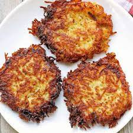

Odin's Recipes - Potato Latkes

You can't go wrong with this classic latke recipe!
with shredded potatoes, grated onion, and a flour and egg binder, these
tasty potato latkes are pan-fried in batches until golden brown.
These hot, crispy, oniony potato pancakes are must for Hanukkah but perfectly acceptable
other times of the year. Serve with applesauce, sour cream, or smoked salmon.
Ingredients
- 3 medium russet potatoes, peeled
- 1 large egg, beaten, or more to taste
- 2 tablespoons all-purpose flour
- 1 tablespoon grated onion
- ½ teaspoon salt, or more to taste
- ¼ cup peanut oil for frying, or as needed
How to Make Potato Latkes Step-By-Step
Here's a very brief overview of what you can expect when you make homemade Potato Latkes:
- Slice peeled potatoes and run through a food processor fitted with the grater attachment.
shredded potatoes in a cheesecloth and wring, extracting as much moisture as possible.
- Measure 2 cups shredded, drained potatoes and place into a medium bowl;
save any extra for another use. Add egg, flour, onion, and salt, and stir until well combined.
- Heat 1/4 inch of oil in a large, heavy-bottomed skillet over medium-high heat.
Place large spoonfuls of potato mixture into the hot oil, pressing down on them to form 1/4- to 1/2-inch-thick patties.
Cook until golden brown, 4 to 5 minutes. Flip and repeat on the other side.
- Remove to a paper towel-lined plate to drain while you cook any remaining latkes. Serve hot.
Odin's Recipes